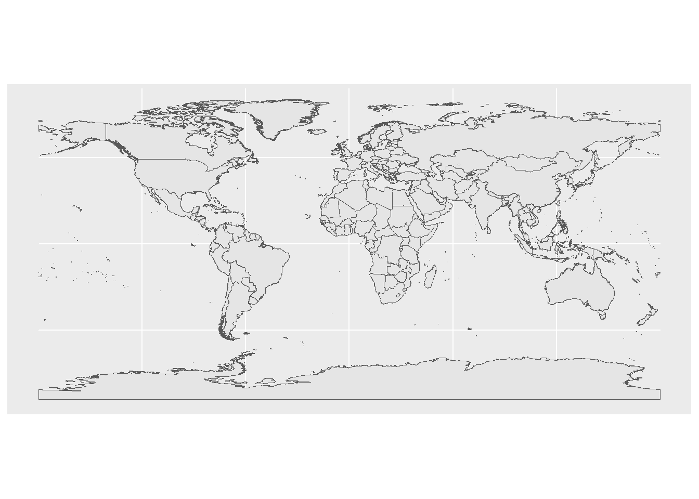

sf packageIntroduction to Spatial Epidemiology
Welcome to the world of Spatial Epidemiology!!
The present document is being prepared as a companion handbook to Hands-on workshop on Spatial Epidemiology using R during 51st Annual National Conference of Indian Association of Preventive and Social Medicine (IAPSMCON 2024).
Why learn spatial epidemiology?
Spatial epidemiology is the description and analysis of geographically indexed health data with respect to demographic, environmental, behavioral, socio-economic, genetic, and infectious risk factors. Spatial Epidemiology concerns the analysis of the spatial/geographical distribution of the incidence of disease. The rational of this workshop is to equip public health professionals with spatial epidemiology skills for disease analysis and risk assessment.
The spatial proximity and concepts in spatial epidemiology are closely related to transmission dynamics in infectious diseases. The rate of transmission is likely to be higher among individuals in close proximity as compared to those far apart. As a result, if spatial dependence is ignored, the confidence interval obtained is likely to be narrower and having higher chances of type I error (assuming positive spatial autocorrelation).
This chapter provides an introduction to geographic information systems (GIS) in R. The field of GIS in healthcare has become extremely useful in providing a fresh outlook to public health. GIS provides an opportunity to enable overlaying data with its spatial representation to support better planning and decision-making in healthcare. The convergence of many new sub-disciplines such as medical geography, public health, health informatics and data science help us better understand the similarities and differences in population health across the world. Some of the applications of GIS in healthcare include disease surveillance, environmental health, infectious diseases such as mathematical modelling and agent based modelling, and even medical imagining. While traditional uses of GIS in healthcare still are relevant, newer methods and advancing technology would be monumental for public health research.
It is now being realized that the healthcare industry can benefit tremendously from the potential of GIS. Innovative ways are being developed to harness the power of GIS through data integration pipelines and spatial visualization. Both the public and private sectors are adopting GIS to provide value addition across different sectors of healthcare - from public health departments and public health policy and research organizations to hospitals, medical centres, and health insurance organizations. With this background, let us dive right in!
It must be evident by now that geographic information systems (GIS) try to answer the question of WHERE:
- Where diseases are prevalent?
- Where do vulnerable populations live?
- Where are we supposed to undertake public health correction measures?
- Where are resources most needed for improving health conditions?
GIS enabled systems has the potential to offer crucial insights into such questions? However, it is also important that the right questions as being asked. In order to understand better on how to ask the right questions, we may have to revisit the history of GIS in Public Health.
Early examples using maps as tools to better understand disease and death have been applications such as medical mapping and disease topography. From early 17th Century, maps have not simply been used to illustrate a situation but also to prove an argument. Pioneering works in this regard have helped disprove the Theory of Miasma and identified that water as the cause of disease rather than air. Soon by the 18th Century medical maps saw many applications in public health such as plague, yellow fever, and cholera.
In 1854, an English physician, John Snow, provided the classic example of how GIS mapping can be used in epidemiological research. He identified the water source responsible for an outbreak of cholera in London by mapping the locations of those afflicted. By plotting the number and location of fatalities using stacks of bars on a map, Snow was able to perform a task that is now easily taken for granted: he visualized a spatial distribution. Looking at the results, the pattern on the map seems unmistakable. The map appears to support Snow’s claims that cholera is a waterborne disease and that the pump on Broad Street is the source of the outbreak. Despite its hand-drawn, back-of-the-envelope appearance, Snow writes:
Brief summary of the workshop.
The overall goal of the Spatial Epidemiology workshop is to provide an introduction to spatial data analysis and workflows in R. It is aimed at building a strong foundation in Spatial Epidemiology and spatial data science for healthcare professionals.
The day is divided into four sessions. The first session aims to introduce the basic concepts and spatial data visualization. This will be followed by a group activity on map making. The second session will introduce the workflows and principles of working with spatial data using R through a live demo session. This will be followed by a session on the fundamentals of spatial autocorrelation analysis and group activity on spatial clustering.
The third session will focus on Geographic Weighted Regression (GWR). The last session will be comprising of introduction to advanced concepts including iterations and interactive visualization. This will again be followed up by a group activity and subsequently, all the groups will present their assignments before the feedback session.
Assumptions during the workshop
For the workshop, it is assumed that the data collection has been completed by the researcher and attribute data has been pre-processed for analysis. Pre-processing of datasets is of utmost importance and needs deliberation before starting with analysis of any dataset.
Map projections
Projections transform the curved, three-dimensional surface of the earth into a flat, two-dimensional plane. All map projections have distortions (distance, area, direction, and/or shape). The choice of projection depends on the intended use of the map. An equal-area map projection is a good selection for portraying geographic data distributions and is suitable for most other maps. However, if the map is attempting to show distance from patients to providers, for example, then an equidistant projection is appropriate because it preserves distance.
We sometimes refer to coordinate systems (or grid systems) and datums in context with map projections. With the help of coordinate reference systems (CRS) every place on the earth can be specified by a set of three numbers, called coordinates. Various coordinate systems and datums are used throughout the world. Most mapping starts with a projected map and a coordinate system overlay, which enables locational referencing. Datums, based upon different ellipsoids (idealized versions of the shape of the earth), define the origin and orientation of latitude and longitude lines. The most recently developed and widely used datum is WGS 1984. Global positioning system (GPS) data are often collected in the WGS 1984 datum.
It is important to note that this CRS represented in can be represented in many ways. For example:
PROJ.4 format as +proj=longlat +datum=WGS84 +no_defs +type=crs, and in Well Known Text (WKT) format as
GEOGCS[“WGS 84”, DATUM[“WGS_1984”, SPHEROID[“WGS 84”,6378137,298.257223563]], PRIMEM[“Greenwich”,0], UNIT[“degree”,0.0174532925199433, AUTHORITY[“EPSG”,“9122”]], AUTHORITY[“EPSG”,“4326”]]
Spatial Files and Extensions
There are over 60 different file formats in GIS. However, it is important to understand that the spatial data is broadly categorized into field (also known as continuous data and usually available in raster data format) and discrete (includes point, line, polygon data sets and usually available in vector data format in multitude of combinations) objects. The sf package is the preferred option to use vector data in R, and the raster and terra packages are the choice for raster data.
Vector graphics are comprised of vertices and paths. The three basic symbol types in vector data are points, lines and polygons. Among vector data, the commonly used file formats are the ESRI Shape file extensions (.shp, .dbf, .shx), Geographic JavaScript Object Notation (.geojson, .json) and Google Keyhole Markup Language (.kml, .kmz). Please note that all files of the ESRI Shapefiles are necessary for the file to work properly.
On the contrary, raster data is made up of pixels, also referred to as grid cells). They are usually square but can also be hexagons or other shapes. Rasters have pixels that are associated with a value (continuous) or class (discrete). One of the most widely used raster formats are the GeoTiff extensions (.tif, .tiff).
Introducing the sf package
There are several packages that are available on CRAN that can perform spatial analytical tasks and operations. However, not all of them are having continued support from the original authors and are turning obsolete.
The figure below shows the different spatial packages on CRAN and their popularity, its is clear that the sf package has surpassed all other packages in terms of popularity and user downloads.
The sf package provides simple features access for R. Simple Features is a set of standards that specify a common storage and access model of geographic feature made of mostly two-dimensional geometries (point, line, polygon, multi-point, multi-line, etc.) used by geographic information systems. It is formalized by both the Open Geospatial Consortium (OGC) and the International Organization for Standardization (ISO).
What is a feature?
A feature is thought of as a thing, or an object in the real world, such as a building or a tree. As is the case with objects, they often consist of other objects. A set of features can form a single feature. A tree in a forest can be a feature, a forest can be a feature, a city can be a feature. An image pixel from a satellite can be a feature, or a complete MRI scan image can be a feature too.
Datasets and libraries used in the workshop.
Lets introduce ourselves to the datasets used in this workshop before proceeding further.
library(tidyverse) # Tidy data management
library(sf) # Handling spatial and vector data
library(raster) # Handling raster data
library(spdep) # Moran's I
library(rgeoda) # LISA statistics
library(spgwr) # Spatial regression packages
library(spatialreg)John snow datasets.
The Snow data consists of the relevant 1854 London streets, the location of 578 deaths from cholera, and the position of 13 water pumps (wells) that can be used to re-create John Snow’s map showing deaths from cholera in the area surrounding Broad Street, London in the 1854 outbreak.
snow_deaths <- HistData::Snow.deaths
snow_deaths |>
head() case x y
1 1 13.588010 11.095600
2 2 9.878124 12.559180
3 3 14.653980 10.180440
4 4 15.220570 9.993003
5 5 13.162650 12.963190
6 6 13.806170 8.889046Another data frame giving coordinates used to draw the 528 street segment lines within the boundaries of the map.
snow_streets <- HistData::Snow.streets
snow_streets |>
head() street n x y
1 1 2 16.73800 18.69600
2 1 2 17.66000 18.71200
3 2 2 14.46200 18.65500
4 2 2 16.73800 18.69600
5 3 2 12.79388 18.61613
6 3 2 14.46200 18.65500Additionally, we shall be using dataset giving the locations of water pumps within the boundaries of the map.
snow_pumps <- HistData::Snow.pumps
snow_pumps |>
head() pump label x y
1 1 Oxford Market 8.651201 17.89160
2 2 Castle St E 10.984780 18.51785
3 3 Oxford St #1 13.378190 17.39454
4 4 Oxford St #2 14.879830 17.80992
5 5 Gt Marlborough 8.694768 14.90547
6 6 Crown Chapel 8.864416 12.75354World map.
world <- read_rds(here::here("data",
"spatial_files",
"world_india_compliant.rds"))
world |>
ggplot() +
geom_sf()
India map with state boundaries.
snow_deaths <- HistData::Snow.deaths
snow_streets <- HistData::Snow.streets
snow_pumps <- HistData::Snow.pumps
world <- read_rds(here::here("data",
"spatial_files",
"world_india_compliant.rds"))
india <- readRDS(here::here("data",
"spatial_files",
"India_states.rds"))
india |>
ggplot() +
geom_sf()COVID-19 state wise aggregated datasets.
This dataset has been downloaded from crowd-sourced COVID-19 data ans subsetted from 14 March 2020 to 31 Oct 2021 for demonstration purposes. The dataset has been further modified to calculate the cumulative number of confirmed cases for each state.
covid <- rio::import(here::here("data",
"covid.csv"))
# Subset confirmed cases
covid <- covid |>
filter(Status == "Confirmed")
# Tidy data format
covid <- covid |>
pivot_longer(4:42,
names_to = "state",
values_to = "cases")
# Calculating cumulative cases
covid <- covid |>
group_by(state) |>
mutate(cumsum = cumsum(cases))
# Understanding data
covid |>
head()# A tibble: 6 × 6
# Groups: state [6]
Date Date_YMD Status state cases cumsum
<chr> <IDate> <chr> <chr> <int> <int>
1 14-Mar-20 2020-03-14 Confirmed TT 81 81
2 14-Mar-20 2020-03-14 Confirmed AN 0 0
3 14-Mar-20 2020-03-14 Confirmed AP 1 1
4 14-Mar-20 2020-03-14 Confirmed AR 0 0
5 14-Mar-20 2020-03-14 Confirmed AS 0 0
6 14-Mar-20 2020-03-14 Confirmed BR 0 0covid |>
tail()# A tibble: 6 × 6
# Groups: state [6]
Date Date_YMD Status state cases cumsum
<chr> <IDate> <chr> <chr> <int> <int>
1 31-Oct-21 2021-10-31 Confirmed TG 121 670953
2 31-Oct-21 2021-10-31 Confirmed TR 12 84468
3 31-Oct-21 2021-10-31 Confirmed UP 6 1710168
4 31-Oct-21 2021-10-31 Confirmed UT 5 343896
5 31-Oct-21 2021-10-31 Confirmed WB 914 1592908
6 31-Oct-21 2021-10-31 Confirmed UN 0 0World population density.
The Gridded Population of the World (GPW) collection, now in its fourth version (GPWv4), models the distribution of human population (counts and densities) on a continuous global raster surface. The purpose of GPW is to provide a spatially disaggregated population layer that is compatible with data sets from social, economic, and Earth science disciplines, and remote sensing. It provides globally consistent and spatially explicit data for use in research, policy-making, and communications.
pop_density <- raster::raster(here::here("data",
"spatial_files",
"pop_density.tif"))
plot(pop_density)New York Leukemia dataset
We will use New York leukemia data from spData package which is a data frame with 281 observations on the following 12 variables, and the binary coded spatial weights used in the source. The variables are:- - AREANAME name of census tract
- AREAKEY unique FIPS code for each tract - X x-coordinate of tract centroid (in km) - Y y-coordinate of tract centroid (in km) - POP8 population size (1980 U.S. Census) - TRACTCAS number of cases 1978-1982 - PROPCAS proportion of cases per tract - PCTOWNHOME percentage of people in each tract owning their own home - PCTAGE65P percentage of people in each tract aged 65 or more - Z transformed proportions - AVGIDIST average distance between centroid and TCE sites - PEXPOSURE “exposure potential”: inverse distance between each census tract centroid and the nearest TCE site, IDIST, transformed via log(100*IDIST)
df_gwr <- spData::nydata
df_gwr |> glimpse()Rows: 281
Columns: 12
$ AREANAME <fct> Binghamton city, Binghamton city, Binghamton city, Binghamt…
$ AREAKEY <fct> 36007000100, 36007000200, 36007000300, 36007000400, 3600700…
$ X <dbl> 4.069397, 4.639371, 5.709063, 7.613831, 7.315968, 8.558753,…
$ Y <dbl> -67.3533, -66.8619, -66.9775, -65.9958, -67.3183, -66.9344,…
$ POP8 <dbl> 3540, 3560, 3739, 2784, 2571, 2729, 3952, 993, 1908, 948, 1…
$ TRACTCAS <dbl> 3.08, 4.08, 1.09, 1.07, 3.06, 1.06, 2.09, 0.02, 2.04, 0.02,…
$ PROPCAS <dbl> 0.000870, 0.001146, 0.000292, 0.000384, 0.001190, 0.000388,…
$ PCTOWNHOME <dbl> 0.32773109, 0.42682927, 0.33773959, 0.46160483, 0.19243697,…
$ PCTAGE65P <dbl> 0.14661017, 0.23511236, 0.13800481, 0.11889368, 0.14157915,…
$ Z <dbl> 0.14197, 0.35555, -0.58165, -0.29634, 0.45689, -0.28123, -0…
$ AVGIDIST <dbl> 0.2373852, 0.2087413, 0.1708548, 0.1406045, 0.1577753, 0.17…
$ PEXPOSURE <dbl> 3.167099, 3.038511, 2.838229, 2.643366, 2.758587, 2.848411,…